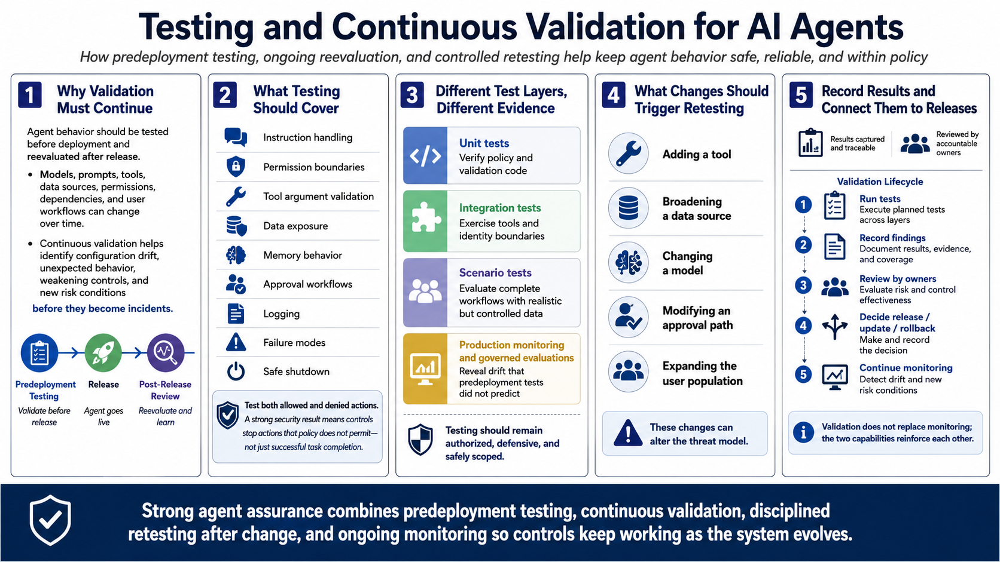

Defending Against Agent Abuse
Testing and Continuous Validation
Connecting to LMS... Progress: in progress
Version 1.0 | Date: 2026-06-21
This course provides educational information regarding defensive security controls for AI agents. It is not offensive security training, exploit development instruction, or legal advice.

Narration
Agent behavior should be tested before deployment and reevaluated after release. Models, prompts, tools, data sources, permissions, dependencies, and user workflows can change over time. Continuous validation helps teams identify configuration drift, unexpected behavior, weakening controls, and new risk conditions before those changes create an incident.
Testing should cover instruction handling, permission boundaries, tool argument validation, data exposure, memory behavior, approval workflows, logging, failure modes, and safe shutdown. Teams should test both allowed and denied actions. A useful security result is not only that the agent completed a normal task, but that surrounding controls stopped an action that policy did not permit.
Different test layers provide different evidence. Unit tests can verify policy and validation code. Integration tests can exercise tools and identity boundaries. Scenario tests can evaluate complete workflows with realistic but controlled data. Production monitoring and carefully governed evaluations can reveal drift that predeployment tests did not predict. Testing should remain authorized, defensive, and safely scoped.
Changes should trigger appropriate retesting. Adding a tool, broadening a data source, changing a model, modifying an approval path, or expanding the user population can alter the threat model. Results should be recorded, reviewed by accountable owners, and connected to release decisions. Validation does not replace monitoring; the two capabilities reinforce each other.